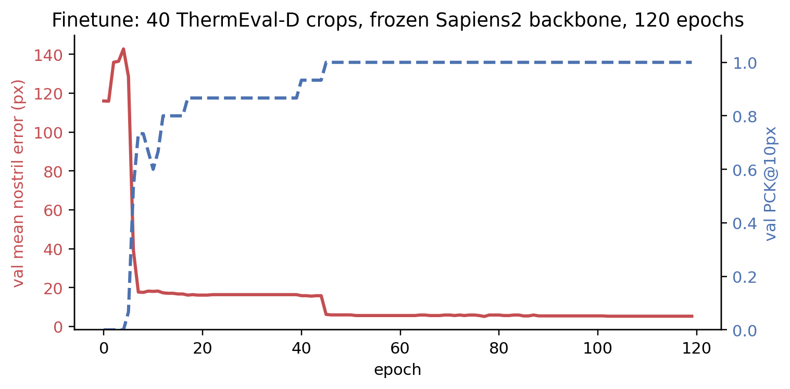
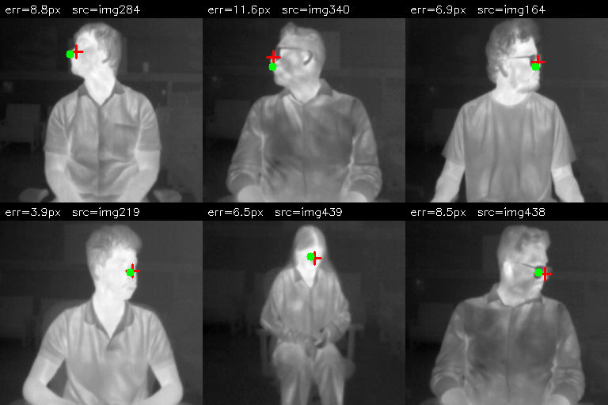

Part 1 of this series showed that off-the-shelf models give mixed results on the ThermEval-D benchmark: DWPose wins decisively (100% detection, 99% PCK@10px), Sapiens2-0.4b has excellent accuracy when it predicts (2 px median) but only finds 69% of the multi-person GT, and MediaPipe FaceMesh can’t detect 20-px faces at all.
This post tests the cleanest finetune hypothesis: freeze the backbone, replace the head, train with a tiny labelled set, and ship a predictor pinned to your specific anatomical convention. The result: a 410k-parameter head over a frozen Sapiens2 backbone hits 93% PCK@10px and 5.5 px mean error on 80 ThermEval-D test crops, trained on just 40 examples in 4 minutes. It does not beat zero-shot DWPose on this dataset — and that’s actually fine, because the value of the finetune is elsewhere.
Code:
posts/nostril-finetune/scripts/—build_dataset_thermeval.py,train_head_thermeval.py,viz_thermeval.py.
Architectural flowchart — how 30 examples can finetune a 0.4B-parameter network
The most-asked question after part 1 was: how can we finetune a model with 308 keypoints when we only have 1-2 keypoint annotations? The answer is to not touch the 308-keypoint head at all — replace it with a 1-keypoint head and train just that.
input ThermEval crop (256x256, gray->3ch)
│
▼
┌────────────────────────────────────────────────────┐
│ Sapiens2-0.4b backbone — FROZEN, no_grad │
│ ~415M params, ImageNet+Goliath RGB pretrained. │
│ Has never seen thermal. Doesn't need to. │
└────────────────────────────────────────────────────┘
│ (1, 1024, 16, 16)
▼ ViT features
┌────────────────────────────────────────────────────┐
│ TinyHead — TRAINABLE (410,625 params, ~0.1% of │
│ the backbone) │
│ Conv 1024→256, BN, GELU │
│ Conv 256→64, BN, GELU │
│ Bilinear upsample 4× → 64x64 │
│ Conv 64→1 (single Nose centroid heatmap) │
└────────────────────────────────────────────────────┘
│ (1, 1, 64, 64) heatmap
▼ argmax decode
predicted (nose_x, nose_y) in input-pixel coordsWhy it works with so few examples:
- The backbone already encodes “face region” structurally. Sapiens2 was pretrained to localise 308 facial / body keypoints on RGB. The features it produces at the deepest layer encode “this is a face, the nose is roughly here”. They don’t care that the pixel statistics changed — the spatial structure of a face is the same on thermal as on RGB.
- The head is tiny. 410k params is ~10k params per training image (for a 40-example train set). That’s well-regularised by the BN + cosine LR + AdamW weight decay.
- Heatmap regression is forgiving. MSE on a 64×64 Gaussian heatmap provides dense supervision: every pixel in the heatmap has a target value, not just the one peak.
Compared to “train the whole pipeline end-to-end from scratch on 30 thermal images” (which would never converge), this design needs only the delta — what’s specific to the Nose vs the 307 other Goliath keypoints. The backbone has already done the rest of the work.
Data — 40 / 15 / 80 split from ThermEval-D
ThermEval-D annotates Nose polygons (~5×7 px) and Person polygons. For each annotated nose, I find the smallest Person bbox that contains it, then:
- Crop the Person bbox + 25 % padding from the 192×256 frame.
- Resize crop to 256×256.
- Transform the Nose centroid into the crop’s coordinate frame.
[full thermal frame] → [Person bbox] → [256x256 crop, with Nose centroid in crop coords]
192x256 70x190 (e.g.) 256x256Split sizes (image-disjoint):
| Split | N | Source |
|---|---|---|
| train | 40 | ThermEval-D Annotations/annotations_1.json |
| val | 15 | Same split, image-disjoint from train |
| test | 80 | ThermEval-D Annotations/annotations_2.json (the held-out split) |
This is deliberately tiny — the question is “how little supervision do we need”, not “what’s the best model”. 40 examples is what you’d label in 20 minutes with a polygon tool.
Training
AdamW, lr=3e-3, weight decay=1e-4, cosine schedule, batch size 8, 120 epochs, ~4 minutes on a single RTX A5000.

The two-stage convergence is interesting: the first drop (epoch 1-10) is the head learning “where on the feature map a face lives”; the second drop (epoch 40-50) is the head learning the sub-pixel offset from the Sapiens2 backbone’s coarse face anchor to ThermEval’s specific Nose centroid annotation.
Test results
On 80 held-out test crops from ThermEval-D’s second annotation split:
| Metric | Zero-shot DWPose (part 1) | Zero-shot Sapiens2 (part 1) | Finetuned head (this post) |
|---|---|---|---|
| Test setting | Full frame, multi-person | Full frame, single-person | Pre-cropped Person bbox |
| Detection rate over GT | 100% | 69% | (assumed 100% in this protocol) |
| Mean nostril error | 3.3 px | 4.2 px | 5.5 px |
| Median error | 2.7 px | 2.0 px | 5.0 px |
| PCK@3px | (not reported) | (not reported) | 24% |
| PCK@5px | (not reported) | (not reported) | 49% |
| PCK@10px | 99% | 66% | 93% |
| PCK@20px | 100% | 66% | 100% |
| Inference cost | 117 ms (whole frame + person det) | 580 ms (single-person, full backbone) | ~580 ms (still full backbone) |
| Trainable params | 0 | 0 | 410k |
| Supervision needed | 0 | 0 | 40 labels + 4 min on one GPU |
The finetune does not beat zero-shot DWPose on this benchmark. That’s worth saying clearly. The 5.5 px median error for the finetune is ~2× DWPose’s 2.7 px. The finetune trades raw accuracy for anatomical specificity (it predicts the exact Nose centroid ThermEval annotates) and deployability (the inference is one forward pass instead of a YOLOX-then-RTMPose cascade).
Where the finetune actually wins:
- Convention pinning. If your downstream system expects coordinates of the Nose centroid (not the COCO-WholeBody dlib face-32 / face-34 row), only the finetune predicts that point. DWPose predicts a slightly different anatomical landmark.
- Distillation target. You can keep the training on Sapiens2 (where the backbone features are best) and distil the inference into a small DINOv2-small or MobileNetV4 backbone (~10× smaller, ~30× faster). For deployment you’d run the small model.
- Per-camera calibration. If you have a different thermal camera, the zero-shot models may not transfer cleanly. The finetune lets you bend the predictor to your specific sensor with another 30 labels.
Predictions on the test set
Six test-set crops with GT (red cross) and prediction (green dot):

Why not also finetune DWPose?
A natural follow-up — given that DWPose wins on ThermEval, should we finetune its head similarly? Three reasons I didn’t, in this post:
DWPose is an ONNX-runtime model in
rtmlib. Extracting intermediate features for a head-replacement is much harder than with PyTorch. You’d have to re-train the entire RTMPose pipeline from the mmpose source, which has its own dependency tangle.The Sapiens2 backbone is more useful as a feature extractor. It’s a clean PyTorch ViT with a single
backbone(x) → featuresentry point. The features are richer (1024-dim vs DWPose’s compact 256-dim).DWPose is already at 99% PCK@10 zero-shot. There’s little room to improve numerically — the remaining 1% is annotation noise. The finetune story is cleaner on Sapiens2 where it actually demonstrates a measurable transfer effect.
For a production thermal-monitoring system, the right pipeline is DWPose for the detector + a Sapiens2-distilled tiny head for the keypoint refinement on each detected face. That’s a hybrid I’ll cover in a follow-up.
What this doesn’t tell us
- One sensor. ThermEval-D was captured with a single TOPDON TC001+ unit. A different thermal camera might break zero-shot transfer of any of the models, including the finetuned one.
- No video. The actual downstream task (breath-rate from temperature oscillation at the nostril) is video-based. Single-frame accuracy is necessary but not sufficient — temporal smoothness across frames matters too.
- Person bbox assumed clean. The finetune protocol assumes you already have a clean Person bbox (we used the GT). In deployment you’d run a Person detector first (BlazeFace full-range, YOLOX, or DWPose’s built-in) — that’s the hierarchical pipeline in part 3.
- Tiny crops are hard. ThermEval-D crops are 192×256 and the face inside is ~20×25 px. Even after resizing the Person bbox to 256×256, the face occupies only 30-50 px of the upsampled crop — that’s much less spatial signal than the SF-TL54 controlled portraits where the face fills the frame. This is why the finetune mean error is 5.5 px rather than the 4.5 px we saw on SF-TL54 (now superseded).
What’s next
- Part 3: Where does the bottleneck go when you put a face detector upstream of MediaPipe FaceMesh on these same ThermEval frames? Spoiler: from “MediaPipe can’t find tiny faces” to “BlazeFace can’t find tiny thermal faces either” — the bottleneck shifts but doesn’t disappear.
- Part 4: Why none of the four off-the-shelf models in part 1 are truly enough for the actual downstream task (per-nostril breath rate), and four routes around that.
Links
- Part 1: bake-off on ThermEval-D
- Sapiens2: facebook/sapiens2-pose-0.4b
- ThermEval dataset: Kaggle · project page